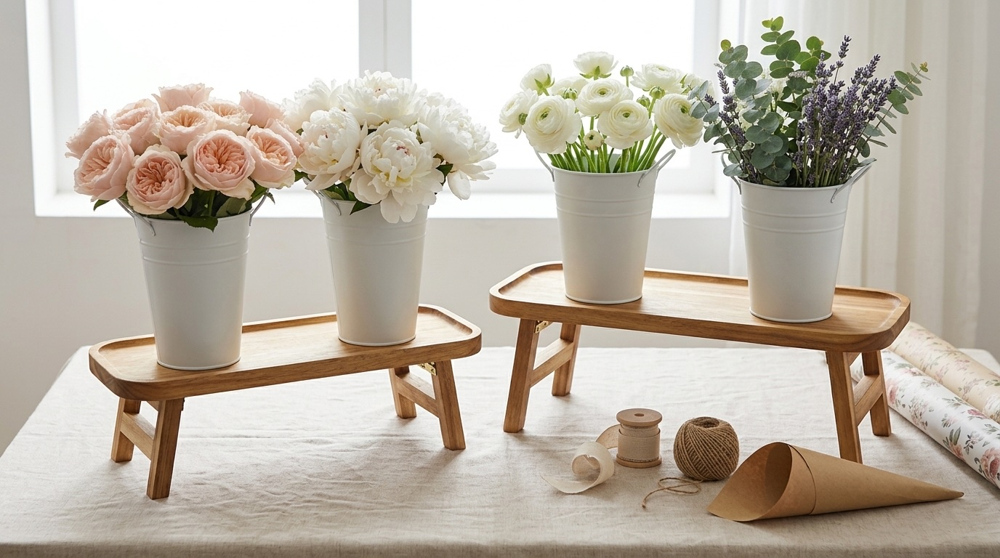

5 DIY Bouquet Ideas for Your Next Gathering
You don't need a florist to make guests feel special — you need a bucket of good flowers and a plan. Here are five bouquet styles that look pulled-together every time, no arranging experience required.

1. The Monochrome Moment
Pick one flower, one color, mixed sizes. A bouquet of all-white ranunculus in small, medium, and large blooms looks curated without any real arranging skill — the single color does the work for you. This is the easiest bouquet on this list to get right on the first try.
2. The Wildflower Mix
Loose, a little imperfect, garden-cut in feeling. Combine two or three textures — a soft focal bloom, something spiky, and trailing greenery — and don't over-arrange it. Let stems fall where they want to. This style hides uneven cuts better than any other on the list.
3. Single Stem Simplicity
One dramatic bloom, one bud vase, repeated down a table. A row of five small vases each holding a single garden rose or peony reads as high-end minimalism — and it's the fastest bouquet idea to execute when you're short on time or stems.
4. The Herb & Flower Blend
Mix lavender, rosemary, or eucalyptus in with your blooms. It adds texture, fills out a bouquet without needing more flowers, and — as a bonus — makes the whole flower bar smell incredible. This is a favorite for showers and dinners where guests are standing close together.
5. Ombré Petals
Same flower, graduating shades — palest at the outside, deepest in the center (or the reverse). Ranunculus and roses both come in enough shade variations to pull this off easily, and it photographs beautifully, which makes it a natural pick if you're styling for pictures.
Ready to style your own?
Join the list for early access, 15% off your first order, and our free DIY Bouquet Guide.
Get Early Access